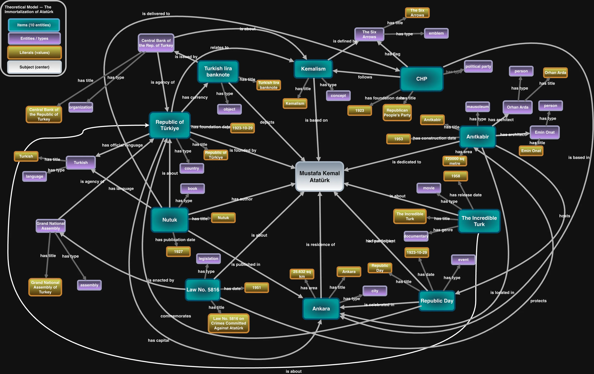
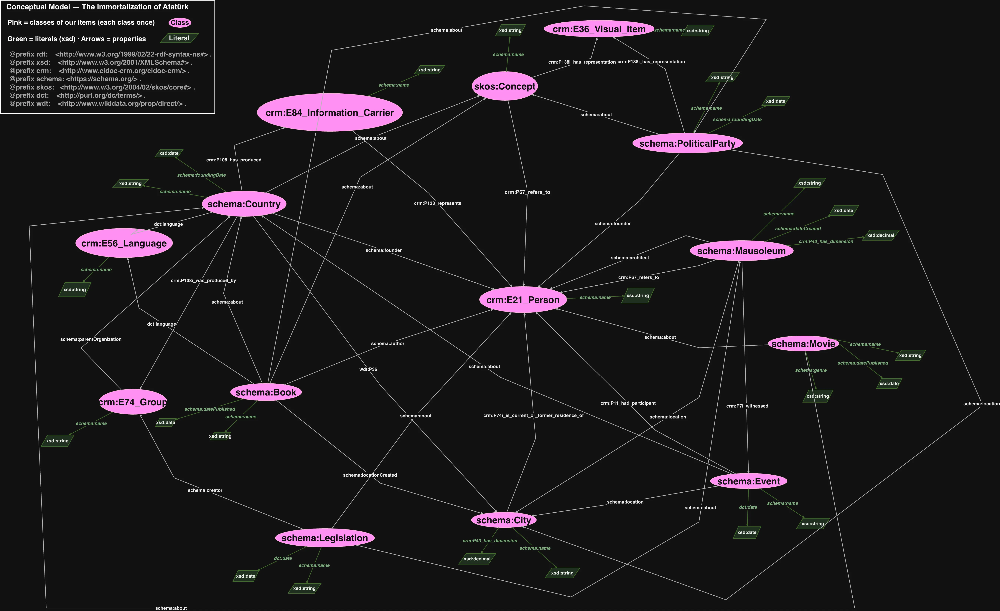

Knowledge Organization
This page shows how the project moves from an idea to a structure. There are two steps: the theoretical model (a mind map of items and relations) and the conceptual model (an ontology of classes and properties).
Theoretical model
The theoretical model is a mind map. Atatürk sits in the centre and the items branch out from him. The arrows are the relations between items — for example a mausoleum that is dedicated to him, or a book he wrote. This model is about real items and their connections.

Conceptual model
The conceptual model is the ontology. Here the individual items disappear and only their classes and properties remain. Each class appears once, and arrows go from class to class. The model reuses existing ontologies instead of inventing new terms:
- CIDOC-CRM (
crm:) — for cultural heritage objects, sites and people. - Schema.org (
schema:) — for general types such as Book, Movie, City, Event. - SKOS (
skos:) — for the concept (Kemalism). - Dublin Core Terms (
dct:) — for dates and language.

From one model to the other
The two models describe the same project at different levels. The mind map answers "which items are connected?" The ontology answers "what kinds of things are these, and how are they linked in general?" The data on the next page must match the ontology exactly — every class and property in the model is used in the data, and nothing is used that is not in the model.